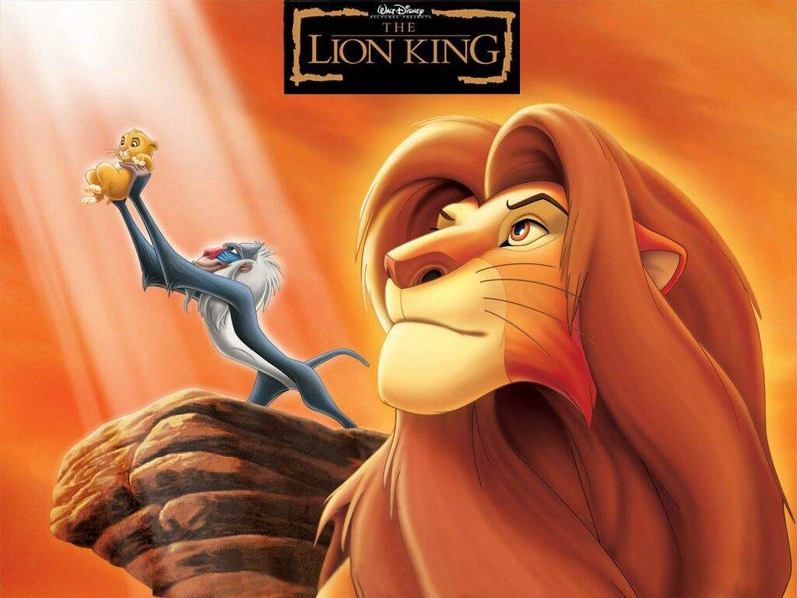

El Rey Leon (1994)
Ganadora de dos Oscars y se convirtió en la película más taquillera del estudio
"Cuenta la historia de Simba, un joven león que tras la muerte de su padre, rey de Pride Lands, es exiliado de su hogar por su tío, que usurpa el trono. Con ayuda de sus amigos y las enseñanzas de su padre, Simba es alentado tiempo después a regresar y reclamar su lugar en el reino."
